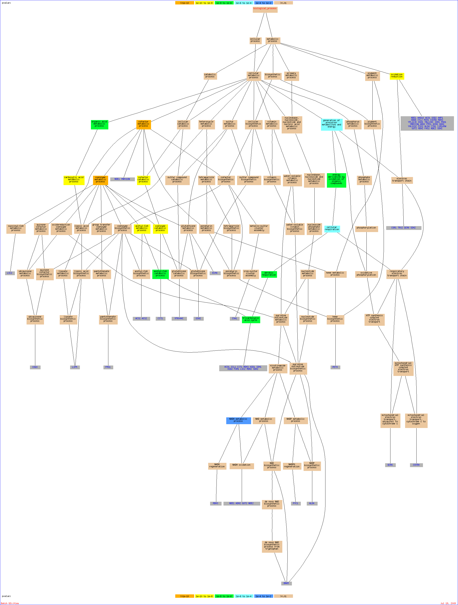

Of your input list, 188 genes are known or unknown but not ambiguous. The total number of genes used to calculate the background distribution of GO terms is 7274.Result Table| Terms from the Process Ontology of gene_association.sgd with p-value <= 0.01 | | Gene Ontology term | Cluster frequency | Genome frequency | Corrected
P-value | FDR | False
Positives | Genes annotated to the term |
|---|
| coenzyme metabolic process | 26 of 188 genes, 13.8% | 149 of 7274 genes, 2.0% | 1.97e-12 | 0.00% | 0.00 | NDE1, ACS1, GSH2, ACO1, PYC1, COQ3, YFR044C, ECM4, BNA5, ICL1, CIT1, MDH3, KGD1, IDH1, KGD2, FUM1, ADH2, FMS1, LIP5, ALD4, GUT2, ACS2, LSC2, MDH2, NDE2, SDH2 | | cofactor metabolic process | 29 of 188 genes, 15.4% | 212 of 7274 genes, 2.9% | 3.41e-11 | 0.00% | 0.00 | NDE1, ACS1, GSH2, PET9, ACO1, PYC1, COQ3, YFR044C, ECM4, YNR018W, BNA5, ICL1, CIT1, ISA1, MDH3, KGD1, IDH1, KGD2, FUM1, ADH2, FMS1, LIP5, ALD4, GUT2, ACS2, LSC2, MDH2, NDE2, SDH2 | | acetyl-CoA metabolic process | 13 of 188 genes, 6.9% | 33 of 7274 genes, 0.5% | 2.45e-10 | 0.00% | 0.00 | KGD1, ACS1, IDH1, ACO1, KGD2, FUM1, ICL1, CIT1, ACS2, MDH3, MDH2, LSC2, SDH2 | | oxidation reduction | 32 of 188 genes, 17.0% | 310 of 7274 genes, 4.3% | 4.14e-09 | 0.00% | 0.00 | NDE1, AAD16, ACO1, SOD2, AHP1, AAD6, XYL2, MCR1, COX5A, MDH3, YPL113C, COR1, KGD1, YNL134C, IDH1, TRX2, PDA1, YBR033W, ADH2, FMS1, QCR6, GDH2, YHL021C, FOX2, ALD4, CTA1, YJR149W, GUT2, MDH2, FAS2, NDE2, SDH2 | | coenzyme catabolic process | 12 of 188 genes, 6.4% | 33 of 7274 genes, 0.5% | 6.16e-09 | 0.00% | 0.00 | KGD1, IDH1, ACO1, KGD2, FUM1, YFR044C, ICL1, CIT1, MDH3, MDH2, LSC2, SDH2 | | cofactor catabolic process | 12 of 188 genes, 6.4% | 34 of 7274 genes, 0.5% | 9.31e-09 | 0.00% | 0.00 | KGD1, IDH1, ACO1, KGD2, FUM1, YFR044C, ICL1, CIT1, MDH3, MDH2, LSC2, SDH2 | | carboxylic acid metabolic process | 36 of 188 genes, 19.1% | 400 of 7274 genes, 5.5% | 9.92e-09 | 0.00% | 0.00 | FAA1, CRC1, PYC1, ACC1, CIT1, MDH3, YMR085W, AGX1, KGD1, IDH1, ARO9, PDA1, ADH2, YLR089C, PET112, GDH2, ALD4, MDH2, URA8, ACS1, CAT8, ACO1, BNA5, YAT2, ICL1, EHT1, CPA2, UGA1, KGD2, ARG1, CAT2, FUM1, RDS2, FOX2, LIP5, FAS2 | | organic acid metabolic process | 36 of 188 genes, 19.1% | 406 of 7274 genes, 5.6% | 1.52e-08 | 0.00% | 0.00 | FAA1, CRC1, PYC1, ACC1, CIT1, MDH3, YMR085W, AGX1, KGD1, IDH1, ARO9, PDA1, ADH2, YLR089C, PET112, GDH2, ALD4, MDH2, URA8, ACS1, CAT8, ACO1, BNA5, YAT2, ICL1, EHT1, CPA2, UGA1, KGD2, ARG1, CAT2, FUM1, RDS2, FOX2, LIP5, FAS2 | | tricarboxylic acid cycle | 11 of 188 genes, 5.9% | 29 of 7274 genes, 0.4% | 2.65e-08 | 0.00% | 0.00 | KGD1, IDH1, ACO1, KGD2, FUM1, ICL1, CIT1, MDH3, MDH2, LSC2, SDH2 | | acetyl-CoA catabolic process | 11 of 188 genes, 5.9% | 29 of 7274 genes, 0.4% | 2.65e-08 | 0.00% | 0.00 | KGD1, IDH1, ACO1, KGD2, FUM1, ICL1, CIT1, MDH3, MDH2, LSC2, SDH2 | | aerobic respiration | 17 of 188 genes, 9.0% | 102 of 7274 genes, 1.4% | 3.05e-07 | 0.00% | 0.00 | PET9, ACO1, NCA2, ICL1, CIT1, MDH3, KGD1, COR1, IDH1, KGD2, FUM1, QCR6, MRPL22, MDL2, LSC2, MDH2, SDH2 | | energy derivation by oxidation of organic compounds | 28 of 188 genes, 14.9% | 296 of 7274 genes, 4.1% | 7.38e-07 | 0.00% | 0.00 | NDE1, ACS1, CAT8, PET9, ACO1, NCA2, GSY2, ICL1, COX5A, CIT1, MDH3, COR1, KGD1, IDH1, KGD2, SAP155, FUM1, ADH2, RDS2, QCR6, MRPL22, MDL2, GLG2, YHR009C, LSC2, MDH2, NDE2, SDH2 | | monocarboxylic acid metabolic process | 19 of 188 genes, 10.1% | 159 of 7274 genes, 2.2% | 9.19e-06 | 0.00% | 0.00 | FAA1, ACS1, CAT8, ACO1, CRC1, PYC1, ACC1, YAT2, EHT1, ICL1, MDH3, UGA1, CAT2, PDA1, RDS2, ALD4, FOX2, MDH2, FAS2 | | cellular respiration | 19 of 188 genes, 10.1% | 161 of 7274 genes, 2.2% | 1.13e-05 | 0.00% | 0.00 | NDE1, PET9, ACO1, NCA2, ICL1, COX5A, CIT1, MDH3, KGD1, COR1, IDH1, KGD2, FUM1, QCR6, MRPL22, MDL2, LSC2, MDH2, SDH2 | | generation of precursor metabolites and energy | 30 of 188 genes, 16.0% | 385 of 7274 genes, 5.3% | 1.74e-05 | 0.00% | 0.00 | NDE1, ACS1, CAT8, PET9, ACO1, NCA2, GSY2, ICL1, COX5A, CIT1, MDH3, COR1, KGD1, IDH1, KGD2, TRX2, PDA1, SAP155, FUM1, ADH2, QCR6, RDS2, MRPL22, MDL2, GLG2, YHR009C, LSC2, MDH2, NDE2, SDH2 | | cellular alcohol metabolic process | 19 of 188 genes, 10.1% | 228 of 7274 genes, 3.1% | 0.00260 | 0.00% | 0.00 | NDE1, CAT8, YPL272C, PSK2, PYC1, XYL2, MCR1, YAT2, MDH3, YIL042C, KGD1, ADH2, PDA1, RDS2, ALD4, GUT2, ACS2, MDH2, NDE2 | | response to heat | 17 of 188 genes, 9.0% | 201 of 7274 genes, 2.8% | 0.00684 | 0.00% | 0.00 | FAA1, GSH2, NCA2, GSY2, PYC1, ECM4, UGA1, AGX1, AFR1, YKL091C, PDE1, YER079W, YHL021C, ALD4, GUT2, YIL108W, YSC84 | | cellular response to heat | 16 of 188 genes, 8.5% | 181 of 7274 genes, 2.5% | 0.00711 | 0.00% | 0.00 | FAA1, NCA2, GSY2, PYC1, ECM4, UGA1, AGX1, AFR1, YKL091C, PDE1, YER079W, ALD4, YHL021C, GUT2, YIL108W, YSC84 | | NADH metabolic process | 5 of 188 genes, 2.7% | 14 of 7274 genes, 0.2% | 0.00838 | 0.11% | 0.02 | NDE1, GUT2, MDH3, ADH2, NDE2 |
Of your input list, 188 genes are known or unknown but not ambiguous. The total number of genes used to calculate the background distribution of GO terms is 7274.
Nodes in the graph are color-coded according to their p-value. Genes in the GO tree are associated with the GO term(s) to which they are directly annotated. To control the graph size, only significant hits with a p-value <= 0.01 and terms descended from them are included.

|
|


{kind=link}
{kind=link}